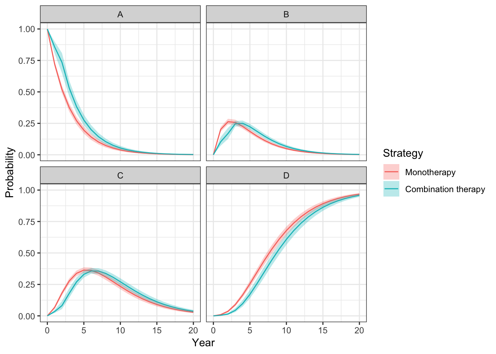
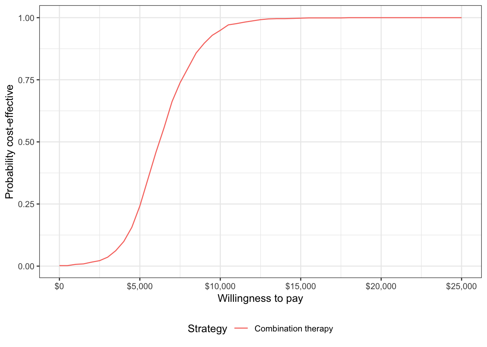

Simple Markov Cohort Models (hesim)
2020-03-11
Source:vignettes/simple-markov-cohort-models-hesim.Rmd
simple-markov-cohort-models-hesim.Rmd1 hesim
hesim is a modular and computationally efficient R package for health economic simulation modeling and decision analysis that provides a general framework for integrating statistical analyses with economic evaluation. The package supports cohort discrete time state transition models (DTSTMs), N-state partitioned survival models (PSMs), and individual-level continuous time state transition models (CTSTMs), encompassing both Markov (time-homogeneous and time-inhomogeneous) and semi-Markov processes. It heavily utilizes Rcpp and data.table, making individual-patient simulation, probabilistic sensitivity analysis (PSA), and incorporation of patient heterogeneity fast.
Features of the current version can be summarized as follows:
- Cohort DTSTMs, N-state PSMs, and individual-level CTSTMs that encompass Markov and semi-Markov processes
- Options to build models via mathematical expressions using nonstandard evaluation or directly from fitted statistical models
- Parameter estimates from either an R based model or from an external source
- Convenience functions for sampling model parameters from parametric distributions or via bootstrapping
- Parameter uncertainty propagated with PSA
- Modeling patient heterogeneity
- Performing cost-effectiveness analyses and representing decision uncertainty from PSAs
- Simulation code written in C++ to boost performance
With hesim an economic model is constructed by combining statistical models for disease progression, costs, and utilities. As shown in the figure, a typical analysis proceeds in a 3-step process as follows:

- Parameterization: An economic model is parameterized by estimating statistical models for disease progression, costs, and utilities using “estimation” datasets, such as extracted data from published studies for a meta-analysis or multi-state survival data from a clinical trial.
- Simulation: The statistical models estimated in Step 1 are combined to construct an economic model. For a given model structure, disease progression, QALYs, and costs are simulated from “input data”, based on the target population and treatment strategies of interest.
- Decision analysis: Simulated outcomes from Step 2 are used to perform decision analysis using approaches such as cost-effectiveness analysis (CEA) and multi-criteria decision analysis (MCDA).
The entire analysis is inherently Bayesian, as uncertainty in the parameters from the statistical models is propagated throughout the economic model and decision analysis with probabilistic sensitivity analysis (PSA). Furthermore, since the statistical and economic models are integrated, patient heterogeneity can be easily introduced with patient level covariates.
2 Installation of hesim
# Install from CRAN:
# install.packages("hesim")
# Install the most up to date development version from GitHub:
# install.packages("devtools")
# devtools::install_github("hesim-dev/hesim")3 Simple Markov cohort model
The simplest models in hesim are cohort discrete time state transitions models (cDTSTMs), which encompass both time-homogeneous and time-inhomogeneous Markov models. cDTSTMs (that can easily incorporate patient heterogeneity and parameter uncertainty) are most conveniently simulated with a four step process specifying:
- Data consisting of the treatment strategies and patient population
- Parameter objects storing the values of all parameters used in the model
- Random number generation expressions that randomly generate probability distributions for the parameters for probabilistic sensitivity analysis (PSA)
- Transformed parameter expressions that transform the parameter estimates into values used for simulation
We illustrate by replicating the HIV model developed by Chancellor et al. and used for didactic purposes in the Decision Modeling for Health Economic Evaluation textbook. The analysis compares two treatment strategies, zidovudine monotherapy and zidovudine + lamivudine combination therapy. The model is time-inhomogeneous because patients are assumed to only use lamivudine for 2 years before switching back to monotherapy.
The model consists 4 health states. Ordered from worst to best to worst, they are: State A (CD4 cells > 200 and < 500 cells/mm3), State B (CD4 < 200 cells/mm3), State C (AIDS), and State D (death). The model assumes that patients can transition to any state that is more severe (i.e., progress) but cannot transition back to a more severe state.

4 Define the model
4.1 Data
Before beginning an analysis, it is necessary to define the treatment strategies of interest and the the target population of interest. We set up the analysis for two treatment strategies and one representative patient.
library(hesim)
library(data.table)
strategies <- data.table(strategy_id = 1:2,
strategy_name = c("Monotherapy", "Combination therapy"))
patients <- data.table(patient_id = 1)
hesim_dat <- hesim_data(strategies = strategies,
patients = patients)
print(hesim_dat)## $strategies
## strategy_id strategy_name
## 1: 1 Monotherapy
## 2: 2 Combination therapy
##
## $patients
## patient_id
## 1: 1
##
## attr(,"class")
## [1] "hesim_data"The model will be simulated for each treatment strategy and representative patient combination. Such data containing treatment strategy and patient characteristics can be generated using expand().
## strategy_id patient_id strategy_name
## 1: 1 1 Monotherapy
## 2: 2 1 Combination therapy4.2 Parameters
Counts of transitions at yearly intervals between each of the 4 health states were available from a longitudinal dataset from Chelsea and Westminister hospital.
trans_mono <- matrix(c(1251, 350, 116, 17,
0, 731, 512, 15,
0, 0, 1312, 437,
0, 0, 0, 469),
ncol = 4, nrow = 4, byrow = TRUE)
colnames(trans_mono) <- rownames(trans_mono) <- c("A", "B", "C", "D")
print(trans_mono)## A B C D
## A 1251 350 116 17
## B 0 731 512 15
## C 0 0 1312 437
## D 0 0 0 469The transition probabilities from state \(r\) to each of the 4 states (State A, State B, State C, and State D) can be modeled using Dirichlet distributions, which are parameterized by a vector of concentration parameters \(\alpha = (\alpha_{r1}, \alpha_{r2}, \alpha_{r3}, \alpha_{r4})\). The Dirichlet distribution is particularly useful for modeling uncertainty in the transition probabilities because it is a conjugate prior for the multinomial distribution. The posterior distribution of \(\alpha\) consequently follows a Dirichlet distribution which can be thought of as the “effective sample size” for each transition (see Appendix).
Treatment effects are defined in terms of the relative risk, which is assumed to reduce the probability of all transitions to a more severe health state by an equal amount. We work with the log relative risk since it is approximately normally distributed. The estimated relative risk of disease progression is 0.509 (95% CI 0.365 to 0.710). We can then calculate the mean and standard error on the log scale.
The cost-effectiveness analysis is based on life-years, meaning that each health state is assigned a utility value of 1. The costs of zidovudine and lamivudine are $2,278 and $2,086.50, respectively. Medical costs are split into direct medical and community medical costs.
The parameter estimates are stored in a list.
4.3 Random number generation
To perform a PSA, it is necessary to draw samples of the parameters from suitable probability distributions. While the probability distributions could have been drawn manually and stored in the params object above, it can be more easily done by using random number generation functions with define_rng().
As noted above, we draw the transition probabilities with monotherapy from a dirichlet distribution and the relative risk (of a transition to a worse state with combination therapy relative to monotherapy) from a lognormal distribution. Drug costs and utility are assumed to be fixed while medical costs are drawn from gamma distributions.
Sampled parameters values are stored in a list, meaning that samples for each parameter can be stored as either a vector or matrix. For instance, we sample medical costs for each (non-death) health state from gamma distributions and they a stored in a matrix (one row for each sample and one column for each health state). Likewise, the parameters of each cell in the transition probability matrix are store in a matrix, with parameters of the matrix ordered rowwise across the columns. On the other hand, samples of the relatve risk are stored in a vector.
rng_def <- define_rng({
lrr_se <- (lrr_upper - lrr_lower)/(2 * qnorm(.975)) # Local object
# not returned
list( # Parameters to return
p_mono = dirichlet_rng(alpha_mono),
rr_comb = lognormal_rng(lrr_mean, lrr_se),
c_zido = c_zido,
c_lam = c_lam,
c_dmed = gamma_rng(mean = c_dmed_mean, sd = c_dmed_mean),
c_cmed = gamma_rng(mean = c_cmed_mean, sd = c_cmed_mean),
u = u
)
}, n = 1000)4.4 Transformed parameters
The next step is to “transform” the parameters for use in the economic model using define_tparams(). This typically involves modeling them as a function of the treatment strategies and patient (i.e., the data). To maximzie computational efficiency, all operations are vectorized across the rows in the data. Parameters not include in a transformed parameter function are assumed constant across patients and treatment strategies.
An important helper function is tpmatrix(), which allows users to define transition matrices as a function of other parameters. In this example “vectorized” transition probabilities are defined in terms of the transition matrix for monotherapy (p_mono) and the relative risk (rr). The relative risk is simply 1 for monotherapy (since the corresponding transition matrix is just p_mono) and equal to rr_comb for combination therapy.
The only costs in the model that vary across treatment strategies (rather than just states) are drug costs. The monotherapy treatment strategy include the cost of zidovudine only whereas the combination therapy includes the costs of both zidovudine and lamivudine.
Parameters may depend on time (since the start of the model) by using the package defined time variable. The time variable corresponds to the starting time of time intervals, which are specified using the times argument in define_tparams(). Since patients are only assumed to use lamivudine for two years, rr_comb and the costs of lamivudine are not applied beyond year 2.
tparams_def <- define_tparams({
## The treatment effect (relative risk) is transformed so that it varies by
## strategies and only applies for the first 2 years (Monotherapy is
## the reference strategy). Time intervals are closed on the left
## and open on the right so we use strict equality.
rr <- ifelse(strategy_name == "Monotherapy" | time > 2, 1, rr_comb)
list(
tpmatrix = tpmatrix(
C, p_mono$A_B * rr, p_mono$A_C * rr, p_mono$A_D * rr,
0, C, p_mono$B_C * rr, p_mono$B_D * rr,
0, 0, C, p_mono$C_D * rr,
0, 0, 0, 1
),
utility = u,
costs = list(
drug = ifelse(strategy_name == "Monotherapy" | time > 2,
c_zido, c_zido + c_lam),
community_medical = c_cmed,
direct_medical = c_dmed
)
)
}, times = c(2, Inf))4.5 The model
The model is defined using define_model() function. The names of transition probability matrix, utility, and cost objects are specified, as are the names of the health states.
mod_def <- define_model(tparams_def = tparams_def,
rng_def = rng_def,
params = params)5 Simulation
A economic model (of class CohortDtstm) can be created from a defined model (of class model_def) and data using the generic function create_CohortDtstm(). The economic model is an R6 object consisting of a transition model (trans_model) for simulating transition probabilities with sim_stateprobs(), a utility model for simulating quality-adjusted life-years with sim_qalys(), and a set of cost models (for each cost category) for simulating costs with sim_costs().
econmod <- create_CohortDtstm(mod_def, data)5.1 Health state probabilities
At the start of the model, all patients are assumed to be in State A (the default setting of the transition model of class CohortDtstmTrans). State occupancy probabilities are generated by simulating the discrete time Markov chain; as expected, patients survive longer with combination therapy.
econmod$sim_stateprobs(n_cycles = 20)
# Plot
library(ggplot2)
theme_set(theme_bw())
stateprob_summary <- econmod$stateprobs_[, .(prob_mean = mean(prob),
prob_lower = quantile(prob, .025),
prob_upper = quantile(prob, .975)),
by = c("strategy_id", "state_id", "t")]
stateprob_summary[, strategy_name := factor(strategy_id,
labels = strategies$strategy_name)]
ggplot(stateprob_summary, aes(x = t, y = prob_mean)) +
geom_line(aes(col = strategy_name)) +
geom_ribbon(aes(x = t, ymin = prob_lower, ymax = prob_upper,
fill = strategy_name), alpha = .3) +
facet_wrap(~factor(state_id, labels = LETTERS[1:4])) +
xlab("Year") + ylab("Probability") +
scale_fill_discrete("Strategy") + scale_color_discrete("Strategy")
5.2 Costs and QALYs
Costs and quality-adjusted life-years (QALYs) are computed by integrating the previously simulated state probabilities. To maintain consistency with Chancellor et al., we approximate the integral with a right Riemann sum, which is simply a sum of costs and QALYs measured at the right endpoint of each interval (e.g., costs during model cycle 1 are measured at time 1 (rather than at say, time 0)).
6 Decision analysis
Once output has been generated with an economic model, a decision analysis can be performed. Cost-effectiveness analyses can be performed using other R packages such as BCEA or directly with hesim as described in more detail here. hesim does not currently provide support for MCDA.
A decision analysis is performed by comparing combination therapy to monotherapy.
ce_sim <- econmod$summarize()
wtp <- seq(0, 25000, 500)
icea_pw_out <- icea_pw(ce_sim, comparator = 1, dr_qalys = 0, dr_costs = .06,
k = wtp)The incremental cost-effectiveness ratio (ICER) estimated using means from the PSA is $6,305, which is very close to the estimate from the deterministic analysis from Chancellor et al.
icer_tbl(icea_pw_out)## 1 2
## Incremental QALYs "-" "0.94 (0.55, 1.22)"
## Incremental costs "-" "5,904 (2,690, 10,180)"
## Incremental NMB "-" "40,912 (22,547, 54,864)"
## ICER "-" "6,305"
## Conclusion "-" "Cost-effective"A cost-effectiveness acceptability curve shows that the probability that combination therapy is more cost-effective than monotherapy increases quickly with the willingness to pay (WTP) for a QALY. At $10,000, the probability is 0.941 and approaches 1 at slightly higher WTP values.
ggplot(icea_pw_out$ceac,
aes(x = k, y = prob,
col = factor(strategy_id, labels = strategies$strategy_name[-1]))) +
geom_line() + xlab("Willingness to pay") +
ylab("Probability cost-effective") +
scale_x_continuous(breaks = seq(0, max(wtp), 5000), label = scales::dollar) +
theme(legend.position = "bottom") + scale_colour_discrete(name = "Strategy")